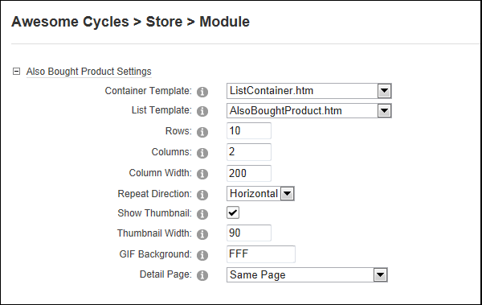

Managing Also Bought Product Settings
How to manage the layout of the Customers Who Bought This Product Also Bought section in the Store Catalog module.
Both the "Show Product Detail" and "Show Also Bought Products" fields must be checked in the General Settings section to configure these settings. See "Managing Store Catalog General Settings"
- Go to the Store Catalog module.
-
- Select the Catalog Settings tab.
- Maximize
 the Also Bought Product Settings section and modify any of the following settings:
the Also Bought Product Settings section and modify any of the following settings: - At Container Template, select the template to be applied to the container of the Also Bought Products section. The template included with the Store is called ListContainer.htm.
- At List Template, select the template to be applied to the Also Bought Products section list. Templates included with the Store are AlsoBoughtProduct.htm and AlsoBoughtProduct_Small.htm. The default setting is AlsoBoughtProduct.htm
- In the Rows text box, enter the number of row of items to be displayed across the page. The default setting is 10.
- In the Columns text box, enter the number of columns of items to be displayed down the page. The default setting is 2.
- In the Column Width text box, enter the pixel width of each column. The default setting is 200.
- In the Repeat Direction text box, select either Horizontal or Vertical to set the direction that items incrementally repeat. E.g. down the page or across the page.
- At Show Thumbnail, select from these options:
- Mark
 the check box to display a thumbnail image. This is the default setting.
the check box to display a thumbnail image. This is the default setting.- In the Thumbnail Width text box, enter the pixel width of each thumbnail image. The default setting is 90.
- In the GIF Background text box, enter the hex value of the background color to use with GIF image format. The default setting is white (FFF). Valid hexadecimal values are #FFFFFF, #f00, FF0000, F09, etc.
- Unmark
 the check box to hide the thumbnail image.
the check box to hide the thumbnail image.
- At Detail Page, select the page where you want to display the product details page. The page must have a Store Catalog module on it. Typically this will be set to Same Page, unless you are using multiple Store Catalog modules.

-
Click the Update button.